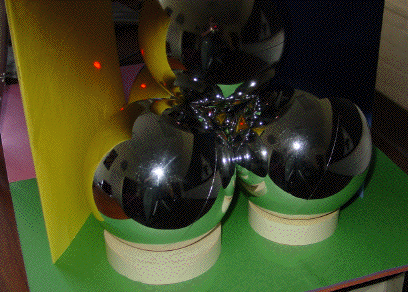

| Finally, note that if a laser pointer is shined at any of the yellow regions,
for example, the beam exits the tetrahedron through the opening in front of the
yellow folder. |
|  |
| On the other hand, if the light is shined on what appears to be the
boundary between the yellow and blue regions, the light exits the tetrahedron in
many places, in front of the green, blue, and yellow folders. |
|
| Thus we have an optical
expression of the Wada property. |
| The left picture is evidence that the light bounces around the boundaries of the yellow,
green, and blue regions. |
| On the left, we zoom out a bit and add another source of
light, to emphasize the yellow, green, and blue regions. |